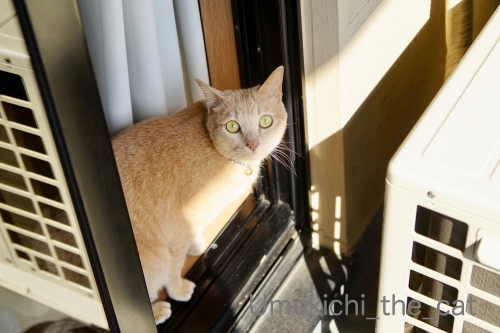

慎重かつ大胆に [梅吉]

ベランダに出ても良いですよって扉をあけてもなかなか出てこない梅吉さんw
伸びするならお日様いっぱいのお外の方が気持ちよくないですか？

まずお外の匂いをかいで

次に気配を伺います。

しばし瞑想しておもむろにそろりそろりと足を踏み出し
(ここまで結構時間がかかる）

一旦出てしまえば大胆なのびー！！！

ブレブレなんですがおしっぽから足先までの伸び具合が秀逸だったので採用w
猫背ってなにー！？

ドアを開け放ってもなかなか出てこないこともあれば
下僕の隙を見て飛び出してしまうこともある。
慎重なのか大胆なのかよくわからないです(⌒-⌒;
おっとのテレワーク、四月末まで延長 (≧▽≦)
我が家付近のソメイヨシノが見頃になってきました＾＾
電話ボックスの屋根がすごいでしょ( ´艸｀)
神社仏閣と桜、どうしてこんなに絵になるんでしょう！
さらにテクテク歩いて〜
枝垂の桜がもう咲いてる！？と思ったら
（梅も桜も一般的な枝垂系は非枝垂系よりも遅れて開花します。）
「一重白彼岸枝垂」ですって。
お彼岸の頃に咲く早咲きの品種のようです。
この桜、有名なのは京都円山公園の「祇園枝垂桜」。
「ギオンシダレザクラ」は通称で品種としては「ヒトエシロヒガンシダレ」なんですって。
今見頃なんだろうけれど京都まで行けないw
これは！古代遺跡みたいな雰囲気があってかっこいい！！
ご近所お花見散歩も新たな発見があって楽しいものですね＾＾
サクラジローさんにも会えました。
曇り空だったのがちょっと残念w
2020-04-02 00:00
nice!(83)
コメント(27)

カフェオレ色の梅吉

梅吉 2023年8月10日 永眠


梅吉と出会った譲渡会

犬猫の理由なき殺処分ゼロ
妄想広告
UMEKICHI 光

爆発的に早い！
時々攻撃的！
Thanks to Mr.Boss365
爆発的に早い！
時々攻撃的！
Thanks to Mr.Boss365

物凄い伸びだニャ～（ﾟ□ﾟ）反ってるし～
ヒトエシロヒガンシダレ綺麗だね。
名前は覚えられそうもないけどw
by 英ちゃん (2020-04-02 01:09)
梅吉さんの伸びきった姿素晴らしいです。
ご近所の桜も素晴らしいですね。ご近所にこんな所があるのも素晴らしい!
by zombiekong (2020-04-02 01:18)
梅吉さんの伸びを見てたら自然に姿勢が良くなりました♪
そしてお外では屋内以上の大胆な伸び！
背骨反り返ってますやん(笑)
太陽ポカポカで気持ち良さそうなのが伝わってきました(^^♪
桜よりも注目してしまう電話ボックス・・・
さすが住吉さんはやる事がひと味違います。
by yamatonosuke (2020-04-02 01:22)
ニャンが本気で伸びると長くなりますねぇ。
こちらも桜が見頃になって来たので
撮りに出たいと思っていますが、天気が・・・＾＾；
by ぽちの輔 (2020-04-02 06:28)
梅吉さん、とっても慎重にベランダに出たのに
こんなに気持ちよさそうに大胆なのび〜を見せてくれるとは( ^ω^ )
電話ボックスの屋根、場所に合わせてるのでしょうか(°_°)
マッチしててめっちゃカッコイイです*\(^o^)/*
ご近所にこんなに見応えのある桜の場所があるなんて
羨ましいです=(^.^)=
by ニッキー (2020-04-02 07:31)
猫の「のび～」は見ているこっちも背筋が伸びて
気持ちよいですよねぇ(*´з`)うちの子達は窓を
開けると我先にと飛び出します。寒いから窓を閉
めると鳴くくせに、開けると逃げます・・・。
一度出すと回収が大変、特に黒猫２匹が。
by mio (2020-04-02 07:40)
こんにちは。
「ベランダ出」には、梅吉くんなりの作法があるみたいですね。道です。
素晴らしい「伸びある反り」をしています。
匂いは納得ですが「しばし瞑想して」は多少理解に苦しみますが・・・
心の準備と推測です。
大胆なのびー！！素晴らしいです。伸び過ぎです（爆）尻尾が棒になってますね（爆）
ブレブレ写真？カメラ撮影の腕の向上を願っています。
テレワーク延長！！おめでとうございます。ちぃさんは踏ん張って下さい？？
「神社仏閣と桜」絵になりますね。良い環境にお住まいです。
ストーンヘンジの雰囲気あり、墓跡ではないですよね？
サクラジローさん？ググってしまいました。良い写真を撮影しています！？(=^･ｪ･^=)
by Boss365 (2020-04-02 07:42)
梅吉さん、しっぽの先までの見事な伸び！すばらしいーー。
多くのニャンコが、のびーーしても、しっぽはおちりの近くで丸くなってるタイプじゃないのかなぁ。先の方だけ伸ばすやつ。文章ではうまく伝わらない(^^;) 実家のミイちゃんで実践してもらいたいけど、今は実家に帰れないからなぁ。
枝垂れ桜、素晴らしいです！こちらはもう桜が見頃過ぎ。毎年恒例ですが、この時期には抜け殻になっている私です(^^;)
by ChatBleu (2020-04-02 09:03)
再訪。
今、よく見たら、大胆なのびーーの1個前のお写真のしっぽ。あれが近い！
おちりの近くで曲がるの。
by ChatBleu (2020-04-02 09:40)
梅吉さん伸びきっていますね！
これだけ伸びるとスッキリしますね。
by ma2ma2 (2020-04-02 10:26)
梅吉さんののけぞったお腹をぞりぞり撫でまわしたい～^^
うちのはこの体勢だと、お尻尾が？マークになっちゃうのですが、梅吉さんはぜ～んぶ伸び切りですか～っとしますね！
1枚目の逆猫背伸びの美しいフォルムが大好き♪
テレワーク延長、梅吉さんもお手伝い忙しい日が続きますね^^;
わが相方も週１～２で出社しますが基本は家。
昼間ゆっくり眠れないこてつ、夜遊びをしなくなりました(≧▽≦)
しだれ桜きれいですね。
明日香村の石舞台かと思うような風景にビックリです(#^^#)
by ゆきち (2020-04-02 12:40)
おそるおそるお外を窺ってから、だったので
慎重派かと思ったら、その時によるのですねｗｗ
気分次第ですよねっ(≧∀≦)
いい伸びですd(*￣∇￣)
MAX伸びた時の長さを測りたいです(ΦωΦ)ふふふ
この赤い橋だけで、どこの場所かすぐ分かります(笑)
桜とよく合いますね♪
うちの会社も、お達しがあるまでテレワーク継続です＾＾
なるべく会社に行きたくないですよー。怖いｗｗ
by カトリーヌ (2020-04-02 12:58)
見事な伸びと、見事なぴーーーーーんとしたシッポ！
これは満点ですっ(笑)
猫背って言葉、「猫」を取った方がいいよねｗｗ
いまどきの人間の方がよっぽど曲がってる！これからは「人背」だねっ
だんなさまのテレワークも伸びましたねえ。
うちのほうは、まだ仕事場にいってるけど、上からのお達しで、家族はきびしく行動制限受けております。わはははｗｗ
なので電車に乗れません！これじゃ仕事も見つけられないよ、まじでｗ
さすがスパイ軍団だ・・・
古代遺跡みたいな雰囲気、まじかっこいい・・・
by リュカ (2020-04-02 13:08)
こんにちは！
ニャンコさんは意外なほど伸びるので
ビックリします・・
ニャンコさんとのふれ合いはここ数年なんです。
by Take-Zee (2020-04-02 14:16)
わぁ梅吉さん、腰大丈夫〜？^^;
おしっぽ長くて良いなぁ…
なんて打ってるのをゆづに見られたら僻まれそう:p
by も〜 (2020-04-02 15:12)
う～む、確かに「猫背」という言葉が
まったく想像できない伸びっぷりですね～！
「おっとのテレワーク、四月末まで延長」･･･これにはどう反応すべきか。
学校もGW明けまで休みになるとこもあるみたいやし
これが一般的な感じになるんでしょうかね～。
普段家にいない人がずっといると邪魔に思ってしまったり？(^_^;)
by よーちゃん (2020-04-02 15:14)
梅吉さんの前身ピーンが最高！
リラックスしている様子が伝わってきます。
桜は綺麗ですね。今年はコロナの影響で、我が県の武家屋敷で有名な角館垂れ桜祭りが中止との事。残念ですがライトアップはするとの事なので、ちょっよだけ行ってみようと思ってます(^_^)
by kou (2020-04-02 18:52)
梅吉さん、見事な伸び！！弓のようにしなやかですね♪
今は公衆電話自体珍しくて最近見ないなあと思ってましたが、こうやって風景に溶け込んで佇んでいるのですね。
枝垂桜、見事な枝振りですね！
by yes_hama (2020-04-02 21:32)
慎重にお外にでたのに・・・
なんて華麗な伸び～なんでしょう♪
可愛過ぎます(*´ω｀*)
by きぃ (2020-04-03 11:36)
１枚目、見事なヨガの猫のポーズ。 さすがです。
電話ボックス、すごく場に馴染んでますね、これは貴重な。
青銅色のラインも効いてますね＾＾。
古代遺跡風と桜の写真、これ、気に入りました♪
by Inatimy (2020-04-03 21:19)
にゃんののび～ってなんで、こうかわいいのだろうか…
桜もきれいな感じで。
古代遺跡風桜、確かに！かっこいいです。
by ふにゃいの (2020-04-03 22:35)
すごくきれいに伸びてますね
なんど見ても梅吉君って足長いわ～
枝垂れ桜、すごくきれいですね
ご近所に素敵な場所があって羨ましい！
by 藤並 香衣 (2020-04-04 00:59)
梅吉さん、前世はバレニーナ？？伸びてますね^^
by ニコニコファイト (2020-04-04 07:06)
ちぃさん おはようございます。
見事な枝垂れ桜ですね。
それにしても梅吉さんのポーズ『流線形』(*´∀｀*)
by U3 (2020-04-04 11:31)
すごい伸びるからびっくりしたよ～！（笑）
by yuppie (2020-04-05 16:11)
梅吉さん、思いっきり伸びてて素敵～！
猫背ってなに？ですね^^
桜が盛りなんですか～いいなあ。
うちのほうは桜も残ってはいるけど、八重桜も咲いちゃってます^^;
by sana (2020-04-05 19:30)
ナイスなそりっぷり♡
by liang (2020-04-07 08:44)